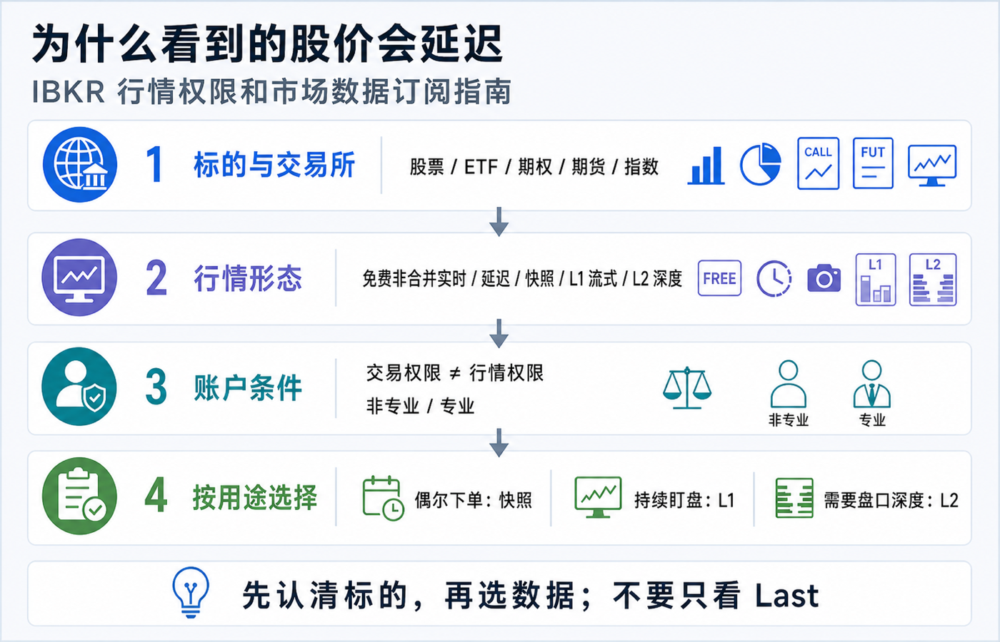
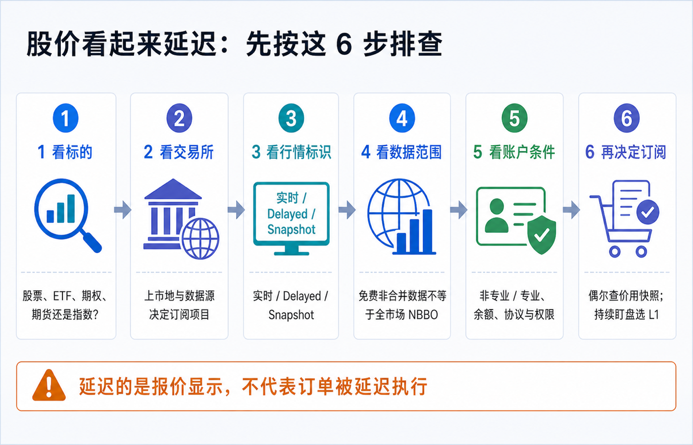
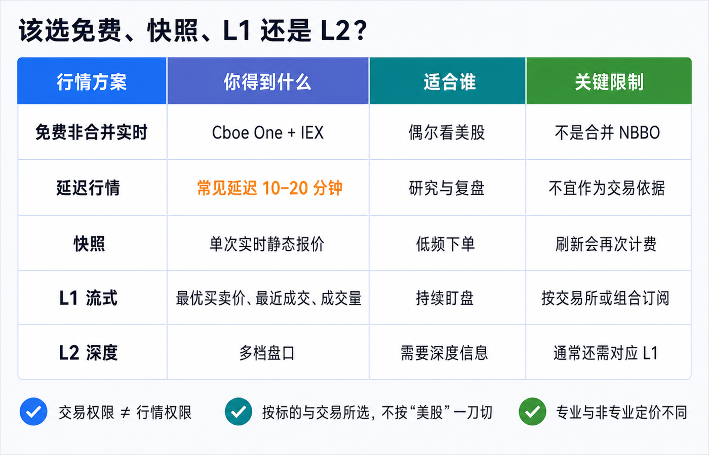

为什么看到的股价会延迟：IBKR 行情权限和市场数据订阅指南
在 IBKR 里看到 Delayed、价格长时间不动，或者发现报价与另一个 App 不一样，通常不代表订单也被延迟了。更常见的原因是：你看的证券来自哪家交易所、账户拿到哪种数据、看到的是合并还是非合并行情，以及这份数据是否需要单独订阅。
先记住结论：交易权限决定能不能下单，行情权限决定能看到什么数据；两者不是同一个开关。 延迟报价只适合参考。订单仍会进入当时的市场，但如果你依据旧价格下单，限价可能离市场很远，市价单又可能以与你屏幕不同的价格成交。
本文是平台功能和市场数据教育，不构成投资、交易、开户、法律、税务或跨境资金建议。数据范围、费用、豁免门槛、账户最低资产、专业身份和菜单会因账户实体、居住地、用户名、平台与交易所规则变化。下单前请以本人 Client Portal、订单预览和 IBKR 当前官方定价页为准。资料核对日期：2026-07-16。

先把 4 件事拆开
| 项目 | 它回答的问题 | 常见误解 |
|---|---|---|
| 交易权限 | 账户能否交易某个国家、市场和产品？ | 能下单就一定自带实时行情。 |
| 行情订阅 | 用户名能接收哪些交易所、哪一级别的数据？ | 开了“美股权限”就覆盖所有美股、期权和指数。 |
| 数据形态 | 免费非合并、延迟、快照、L1 还是 L2？ | 只要数字在跳就是完整实时行情。 |
| 使用方式 | TWS、第三方显示、API 非显示使用属于哪一类？ | 一份订阅可以无条件共享给所有用户名和用途。 |
IBKR 的订阅页面会按平台与地区区分 TWS、Alternative Display 和 Non-Display。使用 NinjaTrader、Excel、API 或自建程序时，不能只确认 TWS 里有数据；相关交易所协议和 API 确认也可能不同。
反过来，某些账户即使没有相应交易资格，仍可能付费订阅数据。IBKR 定价页明确提醒：产品交易限制不会当然免除你主动订购的数据费用。美国期货等特定数据组合又可能把交易权限列为数据使用前提，所以应以具体订阅项目的脚注为准。
你可能看到的 5 种行情
1. 免费实时非合并数据：实时，但不是全市场
IBKR 当前为美国上市股票和 ETF 提供来自 Cboe One 与 IEX 的免费实时流式数据。它的关键词是：实时、免费、非合并。
非合并数据只来自部分交易场所，不会把所有交易所的报价合成全国最佳买卖价（NBBO）。因此，同一只美股在 IBKR 免费行情与另一家提供合并行情的平台上，Bid、Ask、Last 或成交量可能不同。这不一定是谁“慢了”，也可能是数据覆盖范围不同。
如果你只是偶尔查看流动性较好的美股，它可以提供有用的实时参考；如果你要根据全市场最优买卖价持续交易，就需要进一步看合并快照或相应的流式订阅。
2. 延迟行情：通常落后 10–20 分钟
IBKR 对可提供延迟数据的市场，常见延迟为 10–20 分钟。当前表格列出的例子包括：CME、CBOT 与 CFE 常见延迟 10 分钟，OPRA 美国期权常见延迟 15 分钟，部分股票或地区市场可能是 15 或 20 分钟。
延迟时长不是平台承诺的最大误差。IBKR 明确提示，延迟报价只应用于指示性参考，仍可能出现额外延迟；而且并非所有市场、实体和产品都会提供延迟数据。例如官方页面注明，出于监管要求，Interactive Brokers LLC 已不再向其客户提供美国股票延迟报价。
因此不要凭“看起来大约慢 15 分钟”判断数据状态。应看报价旁的 Delayed、时钟或其他行情标识，再查具体交易所。
3. Snapshot / 快照：按一次，取一次实时静态报价
快照不是连续更新的行情。你点击 Snapshot 后得到当时的一次实时报价；刷新就构成下一次请求。
IBKR 当前定价页列示，美国上市股票和 ETF 的快照为每次 0.01 美元，其他工具通常为每次 0.03 美元；账户每月有 1 美元的快照费用减免，等价于最多 100 次 0.01 美元请求。美国股票和 ETF 的快照可提供来自合并 Tapes A、B、C 的 NBBO 与 Last Sale 信息。
当某个市场当月的快照费用达到相应流式服务成本时，IBKR 可能把该市场升级为当月剩余时间的流式服务；月末再重置。低频下单可以利用快照，反复刷新则可能接近订阅成本。
4. L1 / Level 1：持续显示最优一档
L1 通常提供最优 Bid、最优 Ask、最近成交价和成交量，也就是 top of book。它适合需要持续盯盘、频繁查看自选列表或持续使用订单票据的人。
L1 仍要按市场选。不能只说“我要美股实时行情”，因为 NYSE、NYSE American/ARCA/BATS/IEX/区域交易所、NASDAQ、美国期权与指数采用不同数据源。
5. L2 / Level 2：多档盘口，不是“更准的最新价”
L2 展示多个买卖价位和挂单深度，适合确实需要观察订单簿的人。它不保证成交，也不能预测价格。
IBKR 当前说明还提醒，L2 服务通常不能代替相应 L1。以 NYSE ArcaBook 为例，查看 ARCA 深度仍需要对应 Network B 的 top-of-book 数据。新手如果只需要下普通股票或 ETF 订单，先确认可靠 L1，通常比直接购买 L2 更重要。
股价看起来延迟：按 6 步排查

第一步：确认你选中了哪一张合约
同一个代码可能对应股票、ETF、期权、期货、指数或不同上市地。先记录完整名称、资产类型、交易所和交易货币，不要只记代码。
第二步：找上市交易所和实际数据源
美国股票常按主要上市网络区分；ETF 又可能在 ARCA 等市场上市。期权的报价来自 OPRA，标的股票和指数可能另需数据。
第三步：看行情状态，而不是只看 Last
检查页面是否显示 Delayed、Snapshot、Consolidated 或其他标识，并同时看 Bid、Ask、Last 和时间戳。Last 只是最近发生的一笔成交，不是你现在可以买到或卖出的保证价格。
第四步：判断是“延迟”还是“非合并”
如果数字实时变化，但与其他平台不同，可能是 Cboe One + IEX 免费非合并数据与全市场合并 NBBO 的差异，而不是延迟。如果长时间不动并明确标记 Delayed，再继续查订阅。
第五步：检查用户名、专业身份、余额和协议
订阅按用户和用途计费。确认当前登录的是哪个真实或模拟用户名，Market Data Subscriber Status 是什么，计费账户有没有达到最低资产要求，交易所协议是否已接受。
IBKR 当前对普通个人账户列出的市场数据订阅最低净资产要求为 500 美元等值，且还要有足够资金支付订阅费用。它不是开户最低入金，而是激活和维持付费市场数据的条件。
第六步：用 Market Data Assistant 查具体标的
在 Client Portal 进入 Get Help → Market Data Assistant，输入具体证券。结果会按交易所、专业/非专业与深度版本列出可选项目。它比照抄别人的订阅截图更可靠。
美股、ETF 和期权分别对应什么
| 数据源 | 常见覆盖 | 官方示例 | 新手要注意什么 |
|---|---|---|---|
| NYSE / Network A / CTA | NYSE 上市证券的 L1 | F、LLY | 当前非专业价格示例为每月 1.50 美元。 |
| Network B | NYSE American、ARCA、BATS、IEX 与区域交易所 L1 | SPY、VXX、IBKR | 很多 ETF 在这一组，不要只按公司名字判断。 |
| NASDAQ / Network C / UTP | NASDAQ 上市证券 L1 | AAPL、MSFT、TSLA | 当前非专业价格示例为每月 1.50 美元。 |
| OPRA | 美国交易所挂牌期权 L1 | 美股与指数期权合约 | 当前非专业价格示例为每月 1.50 美元；期权 Greeks 还可能需要标的数据。 |
| Cboe Streaming Market Indexes | Cboe 指数 L1 | SPX 等 | 期权行情不当然包含对应指数现货值。 |
2026-07-16 查验时，Network A、B、C 的非专业 L1 均列为每月 1.50 美元，三项合计 4.50 美元；OPRA 非专业 L1 列为每月 1.50 美元。这个算式只说明当前单项标价，不代表每个账户都应全部订阅。
IBKR 也提供 US Equity and Options Add-On Streaming Bundle。当前页面列示非专业费用为每月 4.50 美元，但它要求先订阅 US Securities Snapshot and Futures Value Bundle。前置组合当前列示 10 美元基础费并可能按活动豁免；具体资格、地区可用性与佣金豁免不能只看组合名称，必须连同脚注和本人页面一起确认。
归档中的 2024 年旧文曾把“单订 A、B、C、OPRA”和“两组套餐”按当时门槛直接比较。当前免费非合并数据、组合资格与豁免说明已经变化，因此本文不沿用旧结论，只保留“按实际标的和交易频率计算”的方法。
该选免费、快照、L1 还是 L2

| 你的使用方式 | 更值得先考虑 | 原因 |
|---|---|---|
| 偶尔查看美国上市股票或 ETF，不依赖全市场最优价 | 先用免费非合并流式数据 | 已有实时变化，但要接受不是合并 NBBO。 |
| 每月只下少量订单，希望下单前看一次全市场报价 | Snapshot | 按次获得实时静态 NBBO，低频时可能更省。 |
| 持续盯盘、频繁刷新自选列表 | 对应市场的 L1 | 自动流式更新，避免不断请求快照。 |
| 同时交易 NYSE、ARCA/区域市场与 NASDAQ 股票 | A、B、C 单项或满足条件的组合 | 逐项比较总价、前置订阅和活动豁免。 |
| 交易美国期权 | OPRA，并核对标的股票或指数数据 | 期权价格、标的价格和 Greeks 的数据依赖不同。 |
| 真正需要看多档挂单 | 对应 L1 + 所需 L2 | L2 通常不是独立替代品。 |
最小订阅原则不是“什么都不买”，而是：先列出自己实际交易的 5–10 个标的，逐个查交易所，再购买能够覆盖这些标的和使用频率的最低层级。
Client Portal 订阅操作路径
IBKR 2026 年更新的当前官方路径是：
1. 登录 Client Portal。 2. 进入 Settings → Trading Platform → Market Data Subscriptions。 3. 查看 Current Subscriptions、Market Data Subscriber Status 和 Billable Account。 4. 点击 Current Subscriptions 右侧齿轮。 5. 选择平台用途与地区，例如 TWS、Alternative Display 或 Non-Display。 6. 勾选要订阅或取消的项目，并阅读交易所协议和前置条件。 7. 点击 Continue，复核名称、专业身份、费用和计费账户。 8. 完成确认；正常情况下更新立即生效。
如果系统要求填写非专业问卷，应按真实职业、注册资格和使用目的回答。不要为了获得较低费用而选择不符合事实的身份。
“非专业”不是 IBKR Pro，“专业”也不是交易水平
市场数据的 Professional / Non-Professional 由交易所和数据商规则决定，与 IBKR Pro / Lite 佣金计划不是同一个分类，也不表示你是否擅长交易。
IBKR 当前概括的非专业条件包括：自然人、未在证券或商品监管机构注册、不是投资顾问，也不是在金融机构从事原本需要注册资格的相关工作。公司、LLC、合伙企业等组织通常会被归为专业用户；个人如果把数据用于业务，也可能属于专业用户。
专业价格可能远高于非专业价格。职业、账户结构或用途发生变化时，应在订阅页面更新问卷，而不是继续沿用旧答案。
订阅前还要看 5 条计费规则
1. 通常不按天折算。 月中订阅或取消，仍可能收取整月费用。 2. 从订阅日开始计费。 只试用几分钟也不等于免费试用。 3. 按用户计费。 同一账户有多个订阅用户时可能多次收费。 4. 活动豁免逐项计算。 佣金不能当然同时抵扣所有服务，先应用哪个项目也有规则。 5. 长期不登录 TWS 可能终止订阅。 当前指南说明，60 天未登录 TWS 后订阅会进入待终止流程；收到通知后仍有保留窗口，最终可能在当月末失效。
取消前先看当月是否已经计费，取消后再回到 Current Subscriptions 确认状态。不要只删除 TWS 自选列表，就以为数据订阅也被取消。
行情延迟会怎样影响下单
报价显示延迟，不等于 IBKR 把订单暂存 15 分钟后再发送。订单会按当时市场和你选择的路由、订单类型、交易时段处理。
真正的风险是信息错位：
- 延迟 Last 仍是 100 美元，实时 Ask 已经是 103 美元；市价买单可能接近当前 103 美元成交。
- 延迟 Bid 是 100 美元，你挂 99.50 美元限价买单；实时市场已经涨到 103 美元，订单可能长期不成交。
- 盘前盘后流动性较低，延迟报价和扩展时段价差会进一步放大误判。
- 期权只看合约 Last，不看当前 Bid/Ask 与标的价格，可能把很久以前的成交当成现价。
所以 IBKR 提醒延迟行情只用于指示性参考。需要真实交易时，至少在订单预览前取得适合该标的的当前 Bid/Ask 或实时快照，并使用能表达自己价格边界的订单类型。
8 个常见误区
1. “开了美股交易权限，就有全部实时美股行情。” 交易与数据是两套权限。 2. “免费实时就是完整 NBBO。” Cboe One + IEX 是非合并数据。 3. “另一个 App 价格不同，IBKR 一定延迟。” 可能是数据源、交易时段或合并范围不同。 4. “L2 比 L1 的最新价更准确。” L2 增加深度，不是另一套保证价格。 5. “订了 OPRA，就有 SPX 指数和全部 Greeks。” 指数或标的数据可能仍需单独订阅。 6. “基础货币是 USD，所以行情费一定按同样方式显示和扣款。” 基础货币是报表计量尺，订阅仍按适用费用和计费账户处理。 7. “月中取消就只收半个月。” IBKR 当前明确说明通常不按比例折算。 8. “模拟账户会自动拥有独立实时行情。” 数据可能来自真实账户共享，并受用户名和同时登录规则影响。
一张可保存的订阅清单
- [ ] 已记录实际交易标的、资产类型、上市交易所和交易货币。
- [ ] 已确认屏幕显示的是实时、非合并、延迟、快照还是合并行情。
- [ ] 已分清交易权限、行情订阅和 API/第三方显示用途。
- [ ] Market Data Subscriber Status 与真实职业和用途相符。
- [ ] 计费账户满足最低净资产与订阅费用要求。
- [ ] 已用 Market Data Assistant 查询每个核心标的。
- [ ] 知道所选项目是 L1、L2、快照还是指数数据。
- [ ] 已检查前置订阅、地区限制、交易权限和协议。
- [ ] 已比较单项订阅、组合、快照和免费非合并数据的实际月成本。
- [ ] 已理解整月计费、按用户计费和活动豁免规则。
- [ ] 下单前会看当前 Bid/Ask，而不是只看 Last。
- [ ] 订阅后会在报表中复核实际扣费，并设置取消或复查提醒。
结尾：先问“我看的是哪份数据”
IBKR 行情订阅看起来复杂，是因为“美股”并不是一个数据源，“实时”也不只有一种范围。
最稳的顺序是：标的与交易所 → 行情标识 → 合并或非合并 → 快照、L1 或 L2 → 专业身份与计费条件 → 订单预览。
只要按这个顺序排查，你就能分清：屏幕是真的延迟、只是非合并数据、缺少某个市场订阅，还是把期权、指数和标的行情误当成同一件事。
参考资料
- Interactive Brokers, Market Data Pricing.
- IBKR Client Portal User Guide, Subscribe to Market Data.
- IBKR Client Portal User Guide, Market Data Assistant.
- IBKR Trader Workstation User Guide, Consolidated / Snapshot Market Data.
- IBKR Trader Workstation User Guide, Classic TWS Snapshot Quotes.
- IBKR Campus, Market Data Subscriptions.